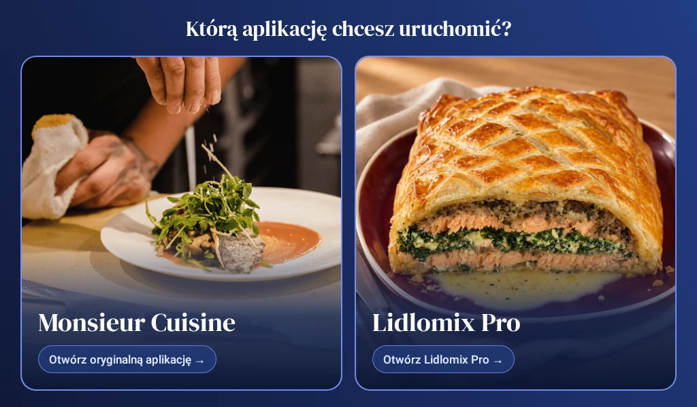
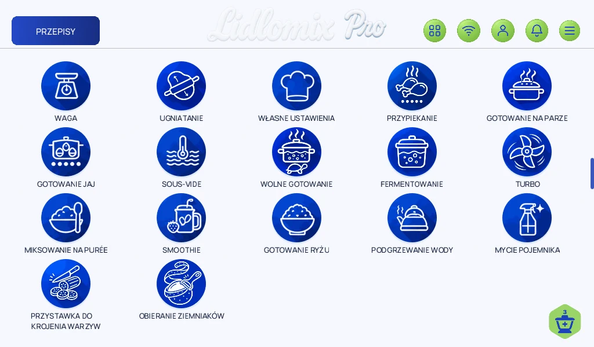

Co się zmieniło od Lidlomix Pro 0.17.8 do 0.19.1
Instrukcje akcesoriów, aktualizacje przez internet i lista wydań.

Niezależny projekt dla Monsieur Cuisine Connect
Lidlomix Pro umożliwia otwieranie domowych przepisów na ekranie Monsieur Cuisine Connect i prowadzi przez kolejne kroki gotowania.
Zobacz najnowszą aktualizację

Najnowsza aktualizacja · 0.19.9
Interfejs robota i telefonu oraz oba katalogi są dostępne w sześciu językach. To wydanie porządkuje wyniki w katalogu Monsieur Cuisine i ułatwia znalezienie właściwej aktualizacji na robocie.
Zobacz najnowsze zmianyOd tego zaczął się projekt
To asystent, który pomaga przerabiać przepisy na Monsieur Cuisine. Z niego wyrósł pomysł, żeby gotowy przepis można było otworzyć na ekranie robota.
Dane z karty GPT z 13 listopada 2026.
Z asystenta możesz już korzystać w wersji GPT. Przepis zapisany jako JSON można przesłać do Lidlomix Pro.
Wtyczka będzie dostępna od .

Instrukcje akcesoriów, aktualizacje przez internet i lista wydań.
Jak zmieniały się programy i ustawienia, z aktualnymi widokami z Connecta.
Od kółka temperatury do przewijanych nastaw. Zobacz zdjęcia z Connecta i zmiany we wszystkich wydaniach po 0.15.3.
Od poplamionego zeszytu babci i zdjęcia kartki do przepisu, z którego można gotować na Connect.
Jak po zerwanych połączeniach udało się uruchomić własny ekran i zachować dostęp do fabrycznej aplikacji.
Co zmieniło się, gdy robot zaczął odczytywać nastawy i prowadzić przez przepis, w tym przez ważenie.
Połączenie z Androidem przez USB, ekran wyboru aplikacji i wyniki testów wagi na Connect.
Przeczytaj o techniceFilm z prezentacją funkcji Lidlomix Pro jest już dostępny na YouTube.
Film nie pokazuje programu „Obieranie ziemniaków”. Zobacz jego kafelek na zrzucie ekranu z Connecta.
Porozmawiaj o przepisach, zgłoś usterkę lub podpowiedz, co warto ulepszyć. Na forum znajdziesz też zapisy na aktualizacje i formularz dla osób, które chcą udostępnić robota do testów.
Od kilku miesięcy rozwijam Lidlomix Pro i sprawdzam kolejne wersje na swoim Connect. Planuję prace nad Monsieur Cuisine Smart i Connect Trend. Do obu wersji potrzebuję fizycznych urządzeń, żeby sprawdzić, jak aplikacja współpracuje z ekranem i czujnikami każdego modelu.
Jeśli masz starszego Monsieur Cuisine Connect, Connect Trend lub Smarta, którego możesz użyczyć albo przekazać do testów, daj mi znać. Wystarczy sam moduł robota z działającym ekranem i uruchamiającym się systemem. Misy do testów już mam. Egzemplarz z przeciekającą misą lub inną usterką też może się przydać.
W zgłoszeniu podaj model i opisz znane usterki. Zakres testów i warunki zwrotu uzgodnimy przed przekazaniem sprzętu. Gdy Lidlomix Pro przejdzie testy na danym modelu, osoby, które udostępniły sprzęt, będą wśród pierwszych, którym zaproponuję aktualizację z nowymi funkcjami.
Jeśli nie znajdzie się egzemplarz do użyczenia, możemy też dobrowolnie złożyć się na zakup używanego robota do testów.
Zaproponuj urządzenie do testów
Jeśli podoba Ci się pomysł na Lidlomix Pro i kierunek, w którym zmierza projekt, możesz, jeśli chcesz, postawić mi kawę. Z asystenta Lidlomix można już korzystać w ChatGPT, a aplikacja na robota jest jeszcze w testach. Każde takie wsparcie pomaga pokryć koszty narzędzi, tokenów AI i testów.
Czy kawa przyspieszy aktualizację? Jeśli zgłoszeń będzie dużo, powstanie kolejka. Na termin wpływa też logistyka. Na miejscu zwykle łatwiej umówić się na aktualizację, a przy wysyłce robota trzeba doliczyć czas na dostawę i odesłanie sprzętu.
Kawa nie gwarantuje wcześniejszego terminu. Gdy mam trochę swobody w ustalaniu kolejki, trudno mi pominąć osoby, które pomagają w testach, zgłaszają uwagi albo wspierają rozwój projektu.
Po ludzku, taką pomoc się pamięta.